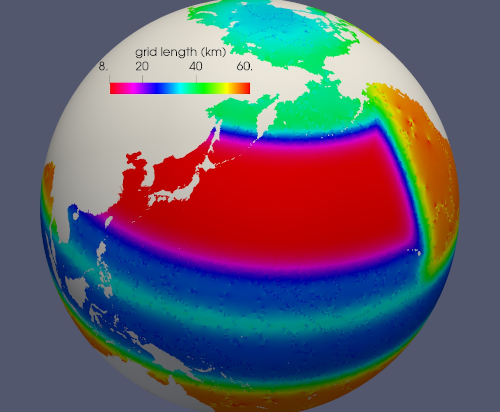
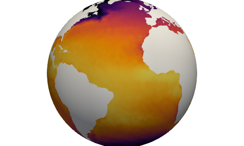
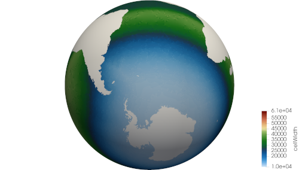
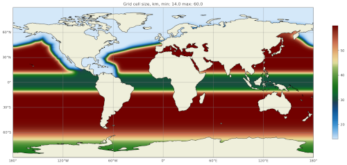

global_ocean
The ocean/global_ocean test group defines meshes,
initial conditions, testing, and spin-up for global, realistic ocean domains.
Currently, two mesh resolutions—QU240 and Icos240 and
EC30to60, along with their variants with
Ice-shelf cavities—have been ported from COMPASS legacy,
with many more to follow in the coming months.

compass will be the tool used to create ocean meshes and initial conditions for future versions of E3SM.
The global_ocean test group a test case for creating each mesh, test
cases for creating each of the 4 supported initial-conditions variants using
that mesh, a number of test cases aimed at regression testing, and a spin-up
test case for each mesh that produces an initial condition appropriate for
incorporation into E3SM. (compass does not provide the tools for
creating many of the files needed for full E3SM coupling, a process that
requires expert help from the E3SM development team.)
Metadata
Most global_ocean test cases produce output files in NetCDF format. The
MPAS development team decided in April 2020
to add a standardized set of metadata to these files to document the mesh and
initial condition, and to provide provenance describing the environment used to
create the mesh.
compass adds the following fields to most NetCDF files (those related to the initial condition are not added to mesh files, because the initial condition is not yet known at the time of mesh creation):
:MPAS_Mesh_Short_Name = "QU240E2r1" ;
:MPAS_Mesh_Long_Name = "QU240kmL16E3SMv2r1" ;
:MPAS_Mesh_Prefix = "QU" ;
:MPAS_Mesh_E3SM_Version = "2" ;
:MPAS_Mesh_Pull_Request = "https://github.com/MPAS-Dev/compass/pull/28" ;
:MPAS_Mesh_QU_Revision = "1" ;
:MPAS_Mesh_QU_Version_Author = "Xylar Asay-Davis" ;
:MPAS_Mesh_QU_Version_Author_E-mail = "xylar@lanl.gov" ;
:MPAS_Mesh_QU_Version_Creation_Date = "210116" ;
:MPAS_Mesh_QU_Minimum_Resolution_km = "240" ;
:MPAS_Mesh_QU_Maximum_Resolution_km = "240" ;
:MPAS_Mesh_QU_Maximum_Depth_m = "3000.0" ;
:MPAS_Mesh_QU_Number_of_Levels = "16" ;
:MPAS_Mesh_Description = "MPAS quasi-uniform mesh for E3SM version 2 at 240-km global resolution with 16 vertical level" ;
:MPAS_Mesh_Bathymetry = "Bathymetry is from GEBCO 2022, combined with BedMachine Antarctica v2 around Antarctica." ;
:MPAS_Initial_Condition = "Polar science center Hydrographic Climatology (PHC)" ;
:MPAS_Mesh_COMPASS_Version = "1.0.0" ;
:MPAS_Mesh_JIGSAW_Version = "0.9.12" ;
:MPAS_Mesh_JIGSAW-Python_Version = "0.2.1" ;
:MPAS_Mesh_MPAS-Tools_Version = "0.2.0" ;
:MPAS_Mesh_NCO_Version = "4.9.7" ;
:MPAS_Mesh_ESMF_Version = "8.0.1" ;
:MPAS_Mesh_geometric_features_Version = "0.1.13" ;
:MPAS_Mesh_Metis_Version = "5.1.0" ;
:MPAS_Mesh_pyremap_Version = "0.0.8" ;
Most of these options can be modified by the user by editing config options. The most convenient way to do this is to add them to the user config file when you are Setting up test cases or Test Suites. In particular, you may wish to set:
# options for global ocean testcases
[global_ocean]
## metadata related to the mesh
# whether to add metadata to output files
add_metadata = True
# the date the mesh was created as YYMMDD, typically detected automatically
creation_date = autodetect
# The following options are detected from .gitconfig if not explicitly entered
author = autodetect
email = autodetect
# The URL of the pull request documenting the creation of the mesh
pull_request = <<<Missing>>>
Meshes
The process for creating global ocean meshes is described below in the mesh test case. compass currently supports 5 meshes. Two are at such coarse horizontal resolution (240 km) that they are mostly useful for testing purposes, not scientific simulations. Two more meshes, which vary in resolution between 30 and 60 km, are used as the lowest resolution meshes in E3SM’s science campaigns. The final mesh has resolution focused in the Southern Ocean around Antarctica.
QU240 and Icos240
The quasi-uniform 240-km (QU240) mesh, is a global mesh with approximately 240-km horizontal resolution everywhere (as the name implies). The Icos240 mesh is similar but based on a subdivided icosahedron, and thus has grid cells that are more regular in size and shape. Ice-shelf cavities around Antarctica are excluded from the mesh. This mesh is used as part of the nightly test suite to perform regression and performance testing in a coarse but realistic model configuration. This mesh is also being used in studies of climate reproducibility.
QUwISC240 and IcoswISC240
The quasi-uniform 240-km mesh with ice-shelf cavities (QUwISC240) and the corresponding icosahedral mesh (IcoswISC240) are nearly identical to the QU240 and Icos240 meshes except that they include the Ice-shelf cavities around Antarctica in the ocean domain.
MPAS-Ocean’s treatment of ice-shelf cavities requires and iterative adjustment
step to make the landIcePressure compatible with the ssh (see
Sea surface height adjustment). This process is relatively time consuming,
requiring a short forward run for each iteration, meaning that QUwISC240 is
less efficient for regression and performance testing than QU240. However,
it is useful for low-resolution testing that exercises compass and MPAS-Ocean
functionality related to ice-shelf cavities and sub-ice-shelf freshwater
fluxes.
QU, Icos, QUwISC and IcoswISC
The quasi-uniform (QU) and icosahedral (Icos) general meshes are global meshes
with approximately constant horizontal resolution everywhere. As with all
global ocean meshes, if wISC is in the mesh name,
Ice-shelf cavities around Antarctica are included,
otherwise they are excluded. The resolution of the mesh is determined by a user
config file, with a default of 120 km (very low resolution). In addition to
config options related to the vertical grid and metadata, the only important
config option for these meshes is:
# options for global ocean testcases
[global_ocean]
# the resolution of the QU or Icos mesh in km
qu_resolution = 120
You can specify qu_resolution by placing it in a user config file and
modify it before setting up test cases with the QU mesh. You could also
modify the config option in each test case after setting them up but this
is typically too tedious to be practical.
EC30to60
The eddy-closure 30- to 60-km (EC30to60) mesh is the coarsest MPAS-Ocean mesh used for scientific simulations. It is coarse enough that it requires the Gent-McWilliams eddy closure <https://doi.org/10.1175/1520-0485(1990)020<0150:IMIOCM>2.0.CO;2> as a parameterization of mixing from mesoscale ocean eddies.

The image above shows the resolution (as measured by \(\sqrt{A_c}\), where \(A_c\) is the area of a cell in the mesh). The resolution is approximately zonally invariant and transitions smoothly between three target resolutions as a function of latitude: ~30 km at around the equator, ~60 km at mid-latitudes and ~35 km near the the poles.
ECwISC30to60
The eddy-closure 30- to 60-km mesh with ice-shelf cavities (ECwISC30to60) is nearly identical to the EC30to60 except that it includes the Ice-shelf cavities around Antarctica in the ocean domain.

A variant of this mesh has been used for low resolution simulations as part of the E3SM v1 Cryosphere Campaign.
Kuroshio8to60 and Kuroshio12to60
The Kuroshio 8- and 12- to 60-km meshes (Kuroshio8to60 and Kuroshio12to60) are designed to explore dynamics of the Kuroshio Current.
The meshes have 8 and 12 km resolution, respectively, in the western North Pacific, tapering to 60 km at mid latitudes, 30 km at the equator, and 35 km in polar regions (the same as the EC30to60).
{kind=link}
RRS6to18 and RRSwISC6to18
The E3SM v3 high resolution meshes are the Rossby-radius-scaling (RRS) 6- to 18-km meshes. They have resolution that scales as a function of latitude approximately with the Rossby radius of deformation from 6 km at the poles to 18 km at the equator. The RRSwISC6to18 mesh has ice-shelf cavities around Antarctica, whereas the RRS6to18 mesh does not.
{kind=link}
SO12to30 and SOwISC12to30
The Southern Ocean 12- to 30-km mesh with ice-shelf cavities (SOwISC12to30), sometimes called the Southern Ocean regionally refined mesh (SORRM), is the main simulation mesh for the E3SM v2 Cryosphere Science Campaign and E3SM v3 Polar Processes, Sea-Level Rise, and Coastal Impacts Campaign.
The SO12to30 is the same mesh but without ice-shelf cavities. The mesh has 12-km resolution around Antarctica and 30-km resolution elsewhere. The mesh includes the Ice-shelf cavities around Antarctica in the ocean domain.
{kind=link}
WC14 and WCwISC14
The Water Cycle 14- to 60-km mesh (WC14) is intended to be the main regionally refined simulation mesh for the E3SM v2 Water Cycle Science Campaign. The E3SM v3 Water Cycle Changes and Impacts Campaign is expected to use the same mesh but including ice-shelf cavities (WCwISC14).
The mesh has 14 km resolution around the continental US, Arctic Ocean and parts of the North Atlantic, tapering to 60 km in mid latitudes, 30 km at the equator, and 35 km around Antarctica.
{kind=link}
Ice-shelf cavities
As discussed in Ice shelf-cavities, the inclusion of ice-shelf cavities and melt rates below ice shelves around Antarctica is a major objective of the E3SM Cryosphere Campaign.
Each of the global_ocean Meshes can support a variant
with ice-shelf cavities along with one without. Meshes with cavities include
the wISC suffix for “with ice-shelf cavities” attached to the mesh prefix
(e.g. QU or EC). Currently all meshes include both variants but we
anticipate that future meshes may include only the variant with or without
cavities.
Around Antarctica, the topographic data currently used to construct initial conditions in compass comes from BedMachineAntarctica. Because this data set provides the ice draft, rather than the weight of the overlying ice shelf, we use the method for Sea surface height adjustment to update the pressure from the ice shelf to be in dynamic balance with the ice draft.
Forward step
The only step shared across many global_ocean test cases is forward
(though I doesn’t always go by that name), which integrates the MPAS-Ocean
model in time in “forward” mode.
As a user, your main way of altering forward runs is by changing namelist
options directly in namelist.ocean or modifying streams in
streams.ocean. However, there are a few parameters related to forward runs
you can change in the config file for a test case. Since some test cases like
restart_test test case and :ref`global_ocean_dynamic_adjustment` have
more than one forward run, it is convenient to change options like
forward_ntasks once in the config file, knowing that this will change the
target number of cores of all forward model runs in the test case. The same
applies to the other forward_* config options that change the minimum cores
allowed, the number of threads, and (in the future) the maximum memory and disk
usage.
Test cases
global_ocean includes 9 types of test cases (each with different versions
for different meshes, initial conditions, time integrators, etc.).
mesh test case
The ocean/global_ocean/<mesh>/mesh test case (where <mesh> is the name
of a mesh, e.g. QU240 and Icos240) creates a “base” horizontal
mesh covering the globe with a distribution of resolution according to the
specifications of the mesh. The base mesh is created using the
JIGSAW and
JIGSAW-Python tools. Then, a
mask for “land” (i.e. non-ocean) cells is created and the mesh is culled so
that only ocean cells are retained. The data set determining which cells are
land vs. ocean depends on whether ice-shelf cavities are included in the mesh
or not (see Ice-shelf cavities). A coastline from
Natural Earth
is combined with either the edge of Antarctic Ice Sheet (AIS) or the edge of the
grounded portion of the AIS from
BedMachineAntarctica.
These coastlines come from the
geometric_features package.
For most meshes, tools and data sets from the
geometric_features and from the
mpas_tools package are used to
ensure that some transects such the thin opening at Gibraltar connecting the
Mediterranean Sea to the Atlantic Ocean (so-called “critical passages”) are
represented by contiguous ocean cells while others such as the Antarctic
Peninsula (so-called “critical land blockages”) are blocked by land with no
ocean connectivity.
As part of culling the mesh, adding critical passages, and removing critical land blockages, there is also a step in which a “flood fill” is performed to ensure that all parts of the global ocean are connected to one another by at least one neighboring cell.
init test case
Once the horizontal mesh has been created, the next step is to create a vertical mesh and and initial condition.
The default vertical coordinate depends on the mesh being used, as described
in Meshes. Possible grid types are described in
Vertical coordinate and include uniform, tanh_dz, index_tanh_dz,
60layerPHC, 80layerE3SMv1, and 100layerE3SMv1.
compass supports 3 different types of initial conditions. One is the World Ocean Atlas 2023 (WOA23) climatology from 1991-2020. The second is derived from the Polar science center Hydrographic Climatology (PHC). The last is the UK MetOffice’s EN4 estimated climatology for the year 1900 (EN4_1900).
All subsequent tests (performance_test test case,
restart_test test case, etc.) could potentially start from any of
these initial conditions, meaning that a performance test starting from WOA23
should be thought of as a different test from one starting from PHC.
Therefore, it is convenient to house the init test case and all subsequent
test cases that depend on it within a subdirectory with the name of the initial
condition. The relative paths associate with each initial condition for a
given <mesh> are:
ocean/global_ocean/<mesh>/WOA23/initocean/global_ocean/<mesh>/PHC/initocean/global_ocean/<mesh>/EN4_1900/init
For meshes with ice-shelf cavities, init also interpolates the
Paolo et al. (2023)
annual mean Antarctic melt rates to the MPAS mesh for use in subsequent test
cases and possible incorporation as a forcing dataset in E3SM. The init
test case also performs an ssh_adjustment step as described in
Sea surface height adjustment.
performance_test test case
The performance_test test case runs 1 or 2 short forward integration, then
performs validation of prognostic variables (layer thickness, velocity,
temperature and salinity) and, if applicable, variables related to fluxes
below ice shelves. The duration of the forward run depends on the mesh and the
time integrator.
Depending on the mesh, versions of the test may exist with both or either of
the split-explict (base on Higdon 2005)
or the 4th-order Runge-Kutta
(RK4) time
integrator. Each of these possible variants is given its own subdirectory.
Thus, for a given mesh <mesh> and initial condition <ic>, one or
more of these versions of the performance_test will be available:
ocean/global_ocean/<mesh>/<ic>/performance_test/split_explicitocean/global_ocean/<mesh>/<ic>/performance_test/RK4
Versions of this test cases is currently available for all meshes, but not necessarily for all combinations of initial conditions and time integrators.
If ice-shelf cavities are not present, the test case includes 1 forward
step.
In configurations with ice-shelf cavities, the test performs 2 short forward runs, one with prognostic ice-shelf melt fluxes and one with “data” ice shelf melt fluxes derived from satellite observations.
restart_test test case
The restart_test test case runs a short forward integration, saving an
intermediate restart file. Then, in a second forward step, the test continues
the run from the restart file. Output from the two steps (full_run and
restart_run) are compared to make sure prognostic variables (layer
thickness, velocity, temperature and salinity) are unchanged.
As with the performance_test test case, restart_test can
be run with either or both of the split-explicit or RK4 time integrator. Thus,
for a the QU240 and Icos240 or QUwISC240 and IcoswISC240
mesh (currently the only supported meshes) and initial condition <ic>, one
or more of these versions of the restart_test will be available:
ocean/global_ocean/QU240/<ic>/restart_test/split_explicitocean/global_ocean/QU240/<ic>/restart_test/RK4ocean/global_ocean/QUwISC240/<ic>/restart_test/split_explicitocean/global_ocean/QUwISC240/<ic>/restart_test/RK4
decomp_test test case
The decomp_test test case runs a short forward integration with 4 cores
(4proc) and then performs the same run again in another step with 8 cores
(8proc). Prognostic variables (layer thickness, velocity, temperature and
salinity) are compared to make sure they are unchanged.
As with the performance_test test case, decomp_test can
be run with either or both of the split-explicit or RK4 time integrator. Thus,
for a the QU240 and Icos240 or QUwISC240 and IcoswISC240
mesh (currently the only supported meshes) and initial condition <ic>, one
or more of these versions of the decomp_test will be available:
ocean/global_ocean/QU240/<ic>/decomp_test/split_explicitocean/global_ocean/QU240/<ic>/decomp_test/RK4ocean/global_ocean/QUwISC240/<ic>/decomp_test/split_explicitocean/global_ocean/QUwISC240/<ic>/decomp_test/RK4
threads_test test case
The threads_test test case runs a short forward integration with 1 thread
and 4 cores (1thread) and then performs the same run again in another step
with 2 threads and 4 cores (2thread). Prognostic variables (layer
thickness, velocity, temperature and salinity) are compared to make sure they
are unchanged.
As with the performance_test test case, threads_test can
be run with either or both of the split-explicit or RK4 time integrator. Thus,
for a the QU240 and Icos240 or QUwISC240 and IcoswISC240
mesh (currently the only supported meshes) and initial condition <ic>, one
or more of these versions of the threads_test will be available:
ocean/global_ocean/QU240/<ic>/threads_test/split_explicitocean/global_ocean/QU240/<ic>/threads_test/RK4ocean/global_ocean/QUwISC240/<ic>/threads_test/split_explicitocean/global_ocean/QUwISC240/<ic>/threads_test/RK4
analysis_test test case
The analysis_test is used to test the proper function and validate the
output from a large number of MPAS-Ocean’s “analysis members”. Analysis
members allow MPAS-Ocean to compute analysis during the model run, meaning
much of the same infrastructure and functionality used in the forward model
can also be used for analysis. Analysis members are also useful for analysis
that is too large or time consuming to perform after the simulation has
completed, or where storing the required data to disk would be infeasible.
The analysis members tested in this test case are:
globalStatssurfaceAreaWeightedAverageswaterMassCensuslayerVolumeWeightedAveragezonalMeanokuboWeissmeridionalHeatTransporthighFrequencyOutputeliassenPalmmixedLayerDepthsdebugDiagnosticseddyProductVariablesoceanHeatContentmixedLayerHeatBudget
For more information on these analysis members, see the MPAS-Ocean user’s guide.
As with the performance_test test case, analysis_test can
be run with either or both of the split-explicit or RK4 time integrator. Thus,
for a the QU240 and Icos240 or QUwISC240 and IcoswISC240
mesh (currently the only supported meshes) and initial condition <ic>, one
or more of these versions of the analysis_test will be available:
ocean/global_ocean/QU240/<ic>/analysis_test/split_explicitocean/global_ocean/QU240/<ic>/analysis_test/RK4ocean/global_ocean/QUwISC240/<ic>/analysis_test/split_explicitocean/global_ocean/QUwISC240/<ic>/analysis_test/RK4
daily_output_test test case
The daily_output_test is similar to the analysis_test test case:
it is used to run and validate the timeSeriesStatsDaily analysis member.
The reason for a separate test is that the daily_output_test must run for
a full day to produce useful output, significantly longer than the
analysis_test test case.
The timeSeriesStatsDaily performs daily averages of a large number of
model variables. The variables in this test are kept in sync with the default
output of the timeSeriesStatsMonthly analysis member used in E3SM. This
test is used to gain confidence that E3SM output from MPAS-Ocean will have the
expected variables and formatting. For example, the test is currently being
used in an effort to improve compliance to the
CF Conventions <https://cfconventions.org/> in the output metadata.
As with the performance_test test case, daily_output_test can
be run with either or both of the split-explicit or RK4 time integrator. Thus,
for a the QU240 and Icos240 or QUwISC240 and IcoswISC240
mesh (currently the only supported meshes) and initial condition <ic>, one
or more of these versions of the daily_output_test will be available:
ocean/global_ocean/QU240/<ic>/daily_output_test/split_explicitocean/global_ocean/QU240/<ic>/daily_output_test/RK4ocean/global_ocean/QUwISC240/<ic>/daily_output_test/split_explicitocean/global_ocean/QUwISC240/<ic>/daily_output_test/RK4
dynamic_adjustment test case
One of the main purposes of compass is to provide a way of spinning up MPAS-Ocean initial conditions to dissipate transients that result from starting the simulation from rest. Particularly for high resolution meshes, surface waves with fast time scales and large amplitude must be damped (by applying Rayleigh friction), first aggressively, then more gently, before damping is disabled.
The dynamic_adjustment test case is implemented differently for each of the
Meshes. For example, for the QU240 and Icos240
and ref:global_ocean_mesh_quwisc240 meshes, we perform only 1 day of damping
(and even this is likely unnecessary), followed by a 1-day simulation without
damping. In contrast, for the EC30to60
and ref:global_ocean_mesh_ecwisc30to60 meshes, we perform a 10-day spin-up
with aggressive damping, followed by 10 more days without damping. Higher
resolution meshes in Legacy COMPASS require several stages of damping,
each over several days before damping can be removed.
Currently dynamic_adjustment is only available for the split-explicit (not
the RK4) time integrator. Thus, for a given mesh <mesh> and initial
condition <ic>, the dynamic_adjustment will be available at:
ocean/global_ocean/<mesh>/<ic>/dynamic_adjustment
Versions of this test cases is currently available for all meshes, but not necessarily for all combinations of initial conditions and time integrators.
The qu240_for_e3sm test suite, quwisc240_for_e3sm test suite, ec30to60 test suite and ecwisc30to60 test suite are Test suites designed to make it easier to run the standard dynamic-adjustment test cases for each mesh along with the related mesh test case, init test case, and files_for_e3sm test case.
files_for_e3sm test case
After running the dynamic_adjustment test case, users may be interested in
preparing a number of files needed for including a new mesh in E3SM. These
files include: MPAS-Ocean and MPAS-Seaice initial conditions (including
Metadata);
SCRIP files;
partition files, created with
gpmetis, for
splitting the mesh across a number of possible core counts; a mask file for
MPAS-Ocean’s mocStreamfunction analysis member; mask and mapping files
for MPAS-Analysis; and
a file containing data ice-shelf melt rates for running DISMF (data
ice-shelf melt flux) compsets in E3SM.
The resulting files are symlinked in a subdirectory of the test case called
assembled_files. This directory contains subdirectories with the same
structure as the E3SM data server.
For new meshes, these files can be uploaded by an expert from the E3SM team
along with additional files required for full E3SM integration. Currently,
there is not a way to use new meshes in E3SM without help from an expert from
the E3SM team.
files_for_e3sm for an existing mesh
Sometimes, we already have an E3SM initial condition but some of the support
files, such as the diagnostics files for
MPAS-Analysis or the
graph partition files for MPAS-Seaice, either weren’t created with the initial
condition or they are out of date. The ocean/global_ocean/files_for_e3sm
test case is useful for creating these files.
The user should create local symlinks to an E3SM initial condition, a graph
file, and a base-mesh file for MPAS-Ocean for the desired mesh. Then, the
config options in files_for_e3sm.cfg should be edited. In this example,
we have created a local link to the mpaso.IcoswISC30E3r5.20231120.nc
initial condition and the mpas-o.graph.info.20231120 graph file in the
test case directory. We also created a symlink to the base mesh (found in the
share/meshes/mpas/ocean subdirectory within the inputdata diretory on
a given E3SM supported machine). The mesh name has also been set to the E3SM
short name for this mesh IcoswISC30E3r5. We indicate that the mesh
includes ice-shelf cavities, which means we include processing related to
ice-shelf melt rates.
We also need to provide several options in the [global_ocean] section of
the config file so the metadata added to the initial conditions will be
correct.
[global_ocean]
prefix = Icos
mesh_description = MPAS subdivided icosahedral mesh for E3SM version
${e3sm_version} at ${min_res}-km global resolution with
<<<levels>>> vertical level
bathy_description = Bathymetry is from GEBCO 2023, combined with
BedMachine Antarctica v3 around Antarctica.
init_description = World Ocean Atlas 2023 climatology 1991-2020
e3sm_version = 3
mesh_revision = 5
min_res = 30
max_res = 30
pull_request = https://github.com/MPAS-Dev/compass/pull/735
creation_date = 20240219
author = Xylar Asay-Davis
email = xylar@lanl.gov
[files_for_e3sm]
mesh_short_name = IcoswISC30E3r5
ocean_restart_filename = mpaso.IcoswISC30E3r5.20231120.nc
ocean_base_mesh_filename = IcoswISC30E3r5_base.20240219.nc
graph_filename = mpas-o.graph.info.20231120
with_ice_shelf_cavities = True
The resulting files are symlinked in a subdirectory of the test case called
assembled_files. This directory contains subdirectories with the same
structure as the E3SM data server.
These files can be uploaded by an expert from the E3SM team. We ask that
users not try to upload the files themselves without consulting an expert from
the team.